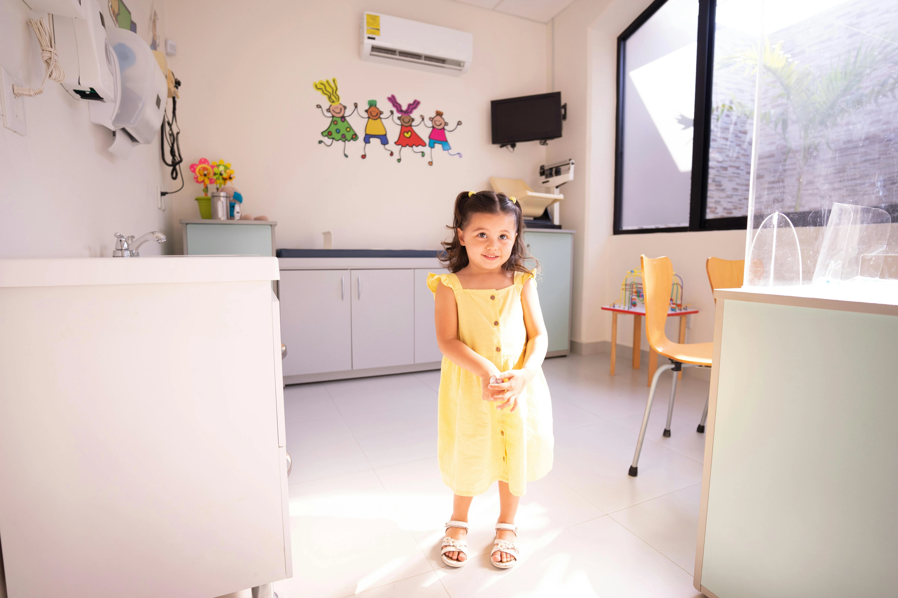

Best Pediatricians in Ramanathapuram: Why Gani Hospitals is the Best Choice
Every parent wants the best medical care for their child. If you are searching for the best pediatrician in Ramanathapuram, trusted child specialists, or a reliable kids clinic Ramanathapuram, Gani Hospitals is a preferred choice for families across the district.

Introduction
Children need specialized healthcare from infancy to teenage years. Their bodies grow rapidly, their immunity develops over time, and they require regular monitoring to stay healthy. This is why choosing an experienced pediatrician is one of the most important decisions for parents.
At Gani Hospitals Ramanathapuram, families receive compassionate, expert pediatric care for newborn babies, infants, children, and adolescents. From routine checkups to emergency illness treatment, our pediatric department focuses on complete child wellness.
If you often search online for a child specialist near me, Gani Hospitals offers accessible, affordable, and trusted pediatric healthcare in Ramanathapuram.
Why Choosing the Right Pediatrician Matters
A pediatrician is not just a doctor who treats fever or cough. Pediatricians guide a child’s complete health journey including growth, nutrition, vaccinations, development, and illness prevention.
The right doctor helps detect health concerns early, advises parents properly, and ensures the child grows in a healthy way.
- Growth monitoring from birth to adolescence
- Vaccination guidance for disease prevention
- Nutrition support for healthy development
- Treatment of common childhood illnesses
- Development milestone checks
- Emergency care support
Why Gani Hospitals is the Best Choice for Pediatric Care
1. Experienced Pediatricians
Our child specialists understand the medical and emotional needs of children. They treat patients gently and make hospital visits less stressful for both kids and parents.
2. Child-Friendly Environment
Many children feel nervous in hospitals. Gani Hospitals provides a welcoming and supportive atmosphere where children feel more comfortable during consultation and treatment.
3. Complete Pediatric Services
From newborn checkups to adolescent health concerns, our pediatric department offers complete care under one roof.
4. Vaccination & Preventive Care
We help parents stay updated with vaccine schedules and preventive health guidance.
5. Trusted by Families in Ramnad
Many families consider Gani Hospitals among the top doctors in Ramnad for reliable child healthcare and prompt medical attention.
Pediatric Services Available at Gani Hospitals
Newborn Baby Care
Newborn babies need close monitoring in the first weeks of life. We support feeding, jaundice checks, weight monitoring, sleep concerns, and newborn wellness guidance.
Vaccinations
Vaccines protect children from serious infections. Our team follows recommended immunization schedules and reminds parents about upcoming doses.
Fever, Cold & Cough Treatment
Common infections are frequent in children. Proper evaluation helps avoid complications and supports faster recovery.
Nutrition & Growth Monitoring
If your child is underweight, overweight, picky eater, or has poor appetite, our pediatricians provide guidance for healthy growth.
Asthma & Allergy Care
Breathing problems, wheezing, skin allergies, and seasonal reactions require proper pediatric evaluation.
Digestive Problems
Vomiting, loose stools, constipation, abdominal pain, and feeding issues are treated carefully with child-specific plans.

Signs Your Child Should See a Pediatrician
Parents sometimes delay consultation thinking symptoms are minor. But children can become sick quickly. Visit a pediatrician if your child has:
- High fever
- Persistent cough or breathing difficulty
- Poor feeding or dehydration
- Vomiting or diarrhea
- Skin rashes
- Weight loss or poor growth
- Repeated infections
- Low activity or unusual tiredness
- Sleep disturbances
- Development delays
Early treatment often prevents complications and helps children recover faster.
Vaccination Care for Children
Vaccination is one of the most important parts of pediatric care. Immunization protects children from preventable diseases and builds long-term health security.
At Gani Hospitals, parents receive clear guidance on vaccine timing, booster doses, and routine immunization schedules.
- Birth vaccines
- Infant vaccination schedules
- Toddler booster doses
- School-age vaccines
- Missed vaccine catch-up plans
Growth & Development Monitoring
Healthy children grow steadily in height, weight, speech, movement, and learning ability. Regular pediatric checkups help ensure milestones are reached on time.
Our pediatricians assess:
- Height and weight progress
- Speech development
- Walking and movement skills
- School readiness
- Behavior and attention concerns
- Sleep patterns
Why Parents in Ramanathapuram Trust Gani Hospitals
Parents want quick appointments, caring doctors, clear explanations, and safe treatment for their children. Gani Hospitals has earned trust through consistent quality care.
- Experienced child specialists
- Friendly consultation approach
- Affordable healthcare options
- Prompt treatment for illness
- Guidance for first-time parents
- Clean hospital environment
- Trusted local reputation
How to Choose the Best Pediatrician in Ramanathapuram
When selecting a pediatrician, look for:
- Experience in child healthcare
- Good communication with parents
- Availability for urgent concerns
- Strong local reputation
- Vaccination services
- Growth monitoring support
- Comfortable child-friendly clinic
Gani Hospitals meets these expectations and remains a preferred healthcare destination for many families.
Child Specialist Near Me – Why Location Matters
When your child has sudden fever, vomiting, injury, or breathing difficulty, nearby medical access becomes very important. Searching for a child specialist near me often means parents need immediate help.
Located in Ramanathapuram, Gani Hospitals provides accessible pediatric care for families from town areas and surrounding locations.
Top Doctors in Ramnad for Kids Healthcare
Parents often ask for recommendations about the top doctors in Ramnad for children. Gani Hospitals is known for professional care, patient support, and dependable treatment standards for pediatric needs.
Our focus is not just treating disease, but helping every child grow healthy and strong.
Trusted Resources for Child Health
For reliable medical information on child health, vaccinations, and development, refer to these trusted global sources:
Conclusion
Choosing the right pediatrician gives peace of mind to every parent. If you are looking for the best pediatrician in Ramanathapuram, trusted Gani Hospitals pediatrics, or a dependable kids clinic Ramanathapuram, our team is here to help.
From newborn care to teenage health guidance, Gani Hospitals offers compassionate, expert, and complete child healthcare for families across Ramanathapuram.
Book an Appointment today with our pediatric specialists at Gani Hospitals Ramanathapuram for expert child care and consultation.
Frequently Asked Questions
When should I take my child to a pediatrician?
For fever, cough, vomiting, poor feeding, growth concerns, vaccinations, or any health issue.
Does Gani Hospitals provide vaccination services?
Yes, routine child vaccinations and schedule guidance are available.
Do pediatricians treat newborn babies?
Yes, pediatricians provide newborn care, feeding support, and health monitoring.
Is Gani Hospitals good for child healthcare?
Yes, many families trust Gani Hospitals for pediatric consultations and treatment.
Can I visit for regular child growth checkups?
Yes, routine wellness and development monitoring visits are available.